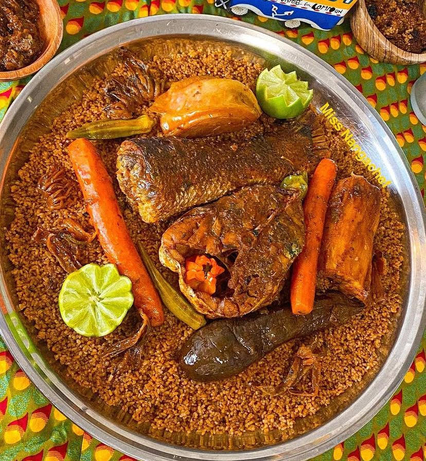
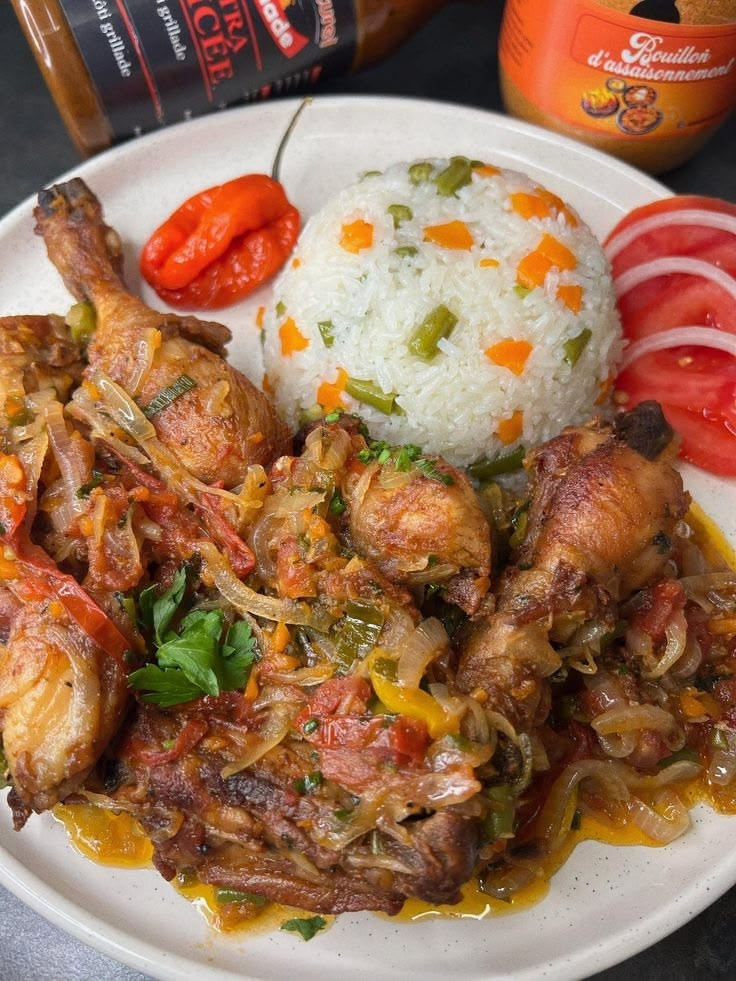

Le goût authentique du Sénégal.
Découvrez des plats sénégalais préparés avec passion, dans une ambiance chaleureuse inspirée de la teranga.
Voir le menu Réserver une table
Découvrez des plats sénégalais préparés avec passion, dans une ambiance chaleureuse inspirée de la teranga.
Voir le menu Réserver une table
TERANGA FOOD met en avant les saveurs du Sénégal à travers des recettes traditionnelles et modernes. Notre objectif est d’offrir à chaque client une expérience culinaire conviviale et authentique.

Plat national à base de riz, poisson et légumes.

Poulet mariné au citron et aux oignons.

Sauce onctueuse à base d’arachide.